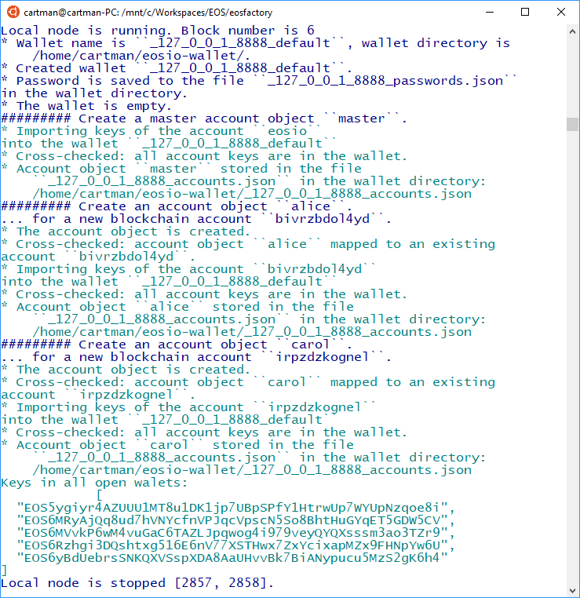
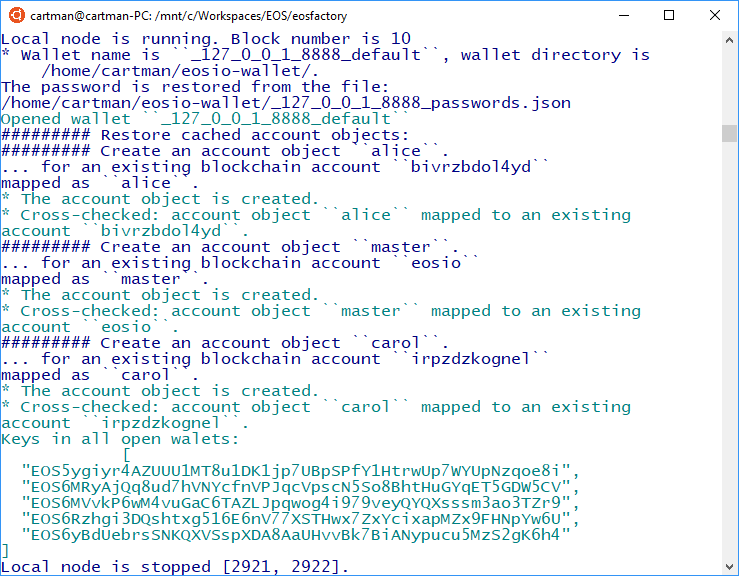
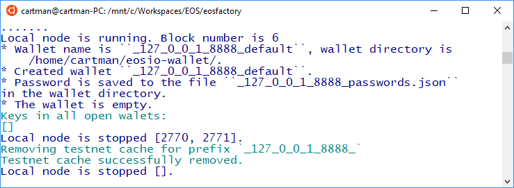
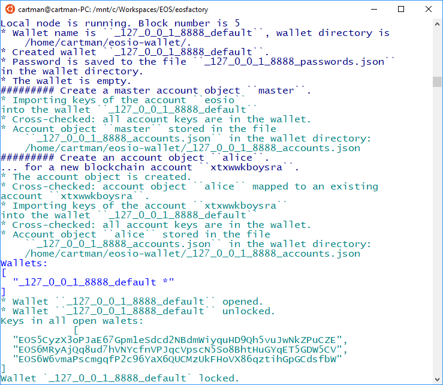

Wallet Class¶
The Wallet class wraps an EOSIO wallet. An instance of the class, i.e. a Wallet object keeps track of Account objects.
The Wallet class is a singleton, exactly one Wallet object resides in the namespace. After the Wallet is created with the create_wallet() command, it remains transparent to the script, yet usually there is no need to access it directly.
In fact, there is no need to use the create_wallet() command explicitly: it is automatically called by any of create_ or new_ account object factory functions.
Although EOSFactory manages only one Wallet object at a time, it produces numerous wallet files in ~/eosio-wallet, i.e. in the location where the keosd wallet manager stores its wallets.
The wallet files are marked with prefixes which are encoding the URL of the active testnet (i.e. the one which is active when the create_wallet() command is executed), for example: _127_0_0_1_8888_default.wallet or _88_99_97_30_38888_default.wallet.
Create a new wallet¶
Create a new Python session and import EOSFactory API:
python3
from eosfactory.eosf import *
First, lets’s start a local testnet:
reset()
Next, create a wallet, then create a couple of accounts and finally let the Wallet object list the private keys associated with those accounts:
create_wallet()
create_master_account("master")
create_account("alice", master)
create_account("carol", master)
get_wallet().keys()
Here is the expected outcome:
create wallet and put two accounts
What has happened?
- The wallet object is created, with its password is stored locally in a file.
- An account object named
masteris created and its keys are stored in the wallet. - Similarly, account objects named
aliceandcarolare created and their keys are stored in the wallet.
Finally, stop the local testnet and exit Python CLI:
stop()
Note that the command create_wallet() is not necessary: it is issued internally with the first call to the create_master_account and create_account account factory functions.
Resume the testnet¶
Create a new Python session and import EOSFactory API:
python3
from eosfactory.eosf import *
Resume the testnet:
resume()
When you run the create_wallet() command, EOSFactory will recreate the existing wallet, including the private keys we created in the previous session:
create_wallet()
get_wallet().keys()
Here is the expected outcome:
resume wallet
Finally, stop the local testnet and exit Python CLI:
stop()
Reset the testnet¶
Create a new Python session and import EOSFactory API:
python3
from eosfactory.eosf import *
And this time we reset the testnet:
reset()
When you run the create_wallet() command, EOSFactory will lose track of the private keys, as the wallet is created from scratch. This is because the local testnet was reset, not resumed.
create_wallet()
get_wallet().keys()
You should get output similar to this:
reset wallet
Finally, stop the local testnet and exit Python CLI:
stop()
Methods of the Wallet class¶
As we mentioned before, when working with unit tests you should never need to access the Wallet object directedly.
However, if you do, below there is a list of methods available in the Wallet class.
Create a new Python session and import EOSFactory API:
python3
from eosfactory.eosf import *
Then reset the local testnode and create an account. The singleton Wallet object is created automatically:
reset()
create_master_account("master")
create_account("alice", master)
And execute the following methods of the Wallet class:
get_wallet().index()
get_wallet().open()
get_wallet().unlock()
get_wallet().keys()
get_wallet().lock()
You should get output similar to this:
wallet methods
Finally, exit Python CLI:
stop()
Test Run¶
The python blocks in the current Markdown document can be executed with a provided bash tool. While the working directory is the root of the EOSFactory installation, do:
eosfactory/pythonmd.sh docs/comments/wallet.md